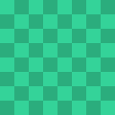
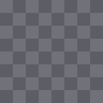
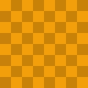

A demo page. The images are generated locally and carry real metadata, so every decision on
this page is the extension's own — nothing here is staged.
Harbour at sunsetWarm light through the cranes, late September.@harbourlight

Morning marketShot on film, scanned at home. No edits beyond the crop.@paperandsilverConcept studyColour keys for a personal project.@studioquiet

Poster experimentsMade with AI, four hours of prompting. #aiart@promptsmith

Cover draftFirst pass at the cover. Still deciding on the type.@coverdraftWhy AI-generated art is suddenly everywhereAn essay about the flood, and what it is doing to galleries.@essaysonline